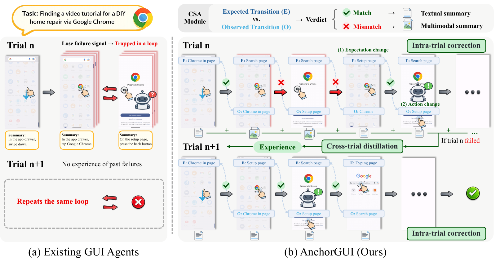
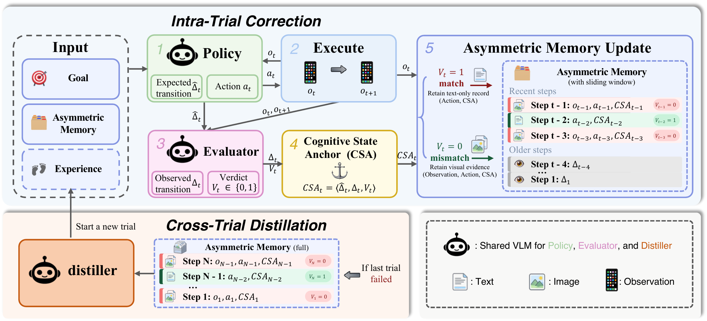

GUI navigation · ECCV 2026
AnchorGUI: Asymmetric Memory for Dual-Scale Learning in GUI Navigation
Gaoling School of Artificial Intelligence, Renmin University of China
We identify informational asymmetry in GUI navigation and introduce a unified framework driven by the Cognitive State Anchor. Its asymmetric memory unifies intra-trial correction and cross-trial experience distillation by preserving the visual evidence that explains failures.


Which GUI states need visual evidence?
GUI agents need to correct their decisions within a trial and learn from failures across trials. Both depend on identifying the visual evidence that explains an unexpected outcome.
Consider an agent searching for a video that instead lands on a “Welcome to Chrome” setup screen. If history compression removes this visual evidence, the agent can repeatedly press Back and relaunch the app without recognizing the loop. Retaining every screenshot inflates context and buries failure-causing actions among visually similar steps.
The key observation is informational asymmetry. A transition that matches the agent’s expectation can often be summarized in text. A mismatch benefits from screenshots that preserve the causal evidence needed for diagnosis. This same distinction helps the agent correct its next action and extract useful experience after a failed trial.
Cognitive State Anchors and asymmetric memory


The Cognitive State Anchor
The policy predicts an action and an expected GUI transition. After execution, the evaluator compares the expected transition with the observed change. The Cognitive State Anchor (CSA) records the expected transition, observed transition, and a binary match or mismatch verdict.
One memory, two learning timescales
Within a trial, a sliding window retains screenshots for mismatched transitions and lightweight text records for matched ones. The agent receives visually grounded evidence to correct its next decision.
Across trials, a distiller uses the asymmetric memory of a failed trial to extract reusable experience. Preserved mismatch evidence focuses credit assignment on likely failure steps, and the resulting experience guides the next attempt through in-context adaptation, without parameter updates.
GUI navigation and cross-trial learning
On AndroidWorld with Qwen3-VL-8B, AnchorGUI achieves 57.3% single-attempt success, compared with 43.7% for ReAct using the same backbone. The complete tables below cover offline action prediction, online task execution, and cross-trial learning. Table 3 also includes a controlled comparison with the AnchorGUI intra-trial module fixed.
Table 1 · Offline GUI navigation benchmarks
Scroll horizontally to view all columns →
| Method | Model | AITZ | Android-Control | GUI-Odyssey | |||
|---|---|---|---|---|---|---|---|
| TM (%) | EM (%) | TM (%) | EM (%) | TM (%) | EM (%) | ||
| Fine-tuning Methods | |||||||
| OS-Genesis | OS-Genesis-7B | 20.0 | 8.45 | 65.9 | 44.4 | 11.7 | 3.63 |
| Aguvis | Aguvis-7B | 35.7 | 19.0 | 65.6 | 54.2 | 26.7 | 13.5 |
| OdysseyAgent | OdysseyAgent | 59.2 | 31.6 | 58.8 | 32.7 | 90.8 | 73.7 |
| UI-TARS | UI-TARS-7B | 71.7 | 55.3 | 68.5 | 60.8 | 78.8 | 57.3 |
| Zero-shot Methods | |||||||
| GPT-4o | GPT-4o | 70.0 | 35.3 | 63.1 | 30.9 | 37.5 | 14.2 |
| ReAct | Qwen3-VL-8B | 71.4 | 57.5 | 71.8 | 70.0 | 75.4 | 58.9 |
| ReSum | Qwen3-VL-8B | 69.9 | 51.9 | 72.3 | 70.5 | 76.5 | 54.3 |
| Truncation | Qwen3-VL-8B | 71.0 | 56.7 | 72.0 | 70.5 | 78.3 | 60.3 |
| Self-Reflection | Qwen3-VL-8B | 73.9 | 58.0 | 71.9 | 70.3 | 80.1 | 60.7 |
| AnchorGUI (Ours) | Qwen3-VL-8B | 75.2 | 59.1 | 74.6 | 73.0 | 80.6 | 60.6 |
Single-trial evaluation. TM: Type Match of the action category. EM: Exact Match of the category and all action parameters. Bold values follow the paper’s best results within each method category.
Table 2 · Single-trial performance on AndroidWorld
Scroll horizontally to view all columns →
| Method | Model | SR (%) |
|---|---|---|
| Fine-tuning Methods | ||
| GUI-Critic | GPT-4o + GUI-Critic-R1 | 29.4 |
| UGround | GPT-4o + UGround | 32.8 |
| Aguvis | GPT-4o + Aguvis-7B | 37.1 |
| Aria-UI | GPT-4o + Aria-UI | 44.8 |
| UI-TARS | UI-TARS-72B-SFT | 46.6 |
| Agent-S2 | Claude-3.7-Sonnet + UI-TARS-72B-DPO | 54.3 |
| Zero-shot Methods | ||
| GPT-4o | GPT-4o | 34.5 |
| AndroidGen | GPT-4o | 46.8 |
| MobileUse | Qwen2.5-VL-7B | 21.6 |
| MobileUse | Qwen2.5-VL-32B | 44.4 |
| ReAct | Qwen3-VL-8B | 43.7 |
| ReSum | Qwen3-VL-8B | 45.6 |
| Truncation | Qwen3-VL-8B | 44.7 |
| Self-Reflection | Qwen3-VL-8B | 47.7 |
| M3A | Qwen3-VL-8B | 39.8 |
| Mobile-Agent-v3 | Qwen3-VL-8B | 55.2 |
| Chain-of-Memory | Qwen3-VL-8B | 46.8 |
| AnchorGUI (Ours) | Qwen3-VL-8B | 57.3 |
SR: task Success Rate. Models are retained for every method, including results using different backbones. Bold values follow the paper’s best results within each category.
Table 3 · Cross-trial learning and token efficiency on AndroidWorld
Scroll horizontally to view all columns →
| Method | Success rate (%) | Average tokens | ||||
|---|---|---|---|---|---|---|
| SR@1 | SR@2 | SR@3 | Δ (T3−T1) | Intra / step | Cross / trial | |
| Baseline intra-trial + various cross-trial strategies | ||||||
| ReAct + Episodic Memory | 43.7 | 49.1 | 53.4 | +9.74 | 91.4k | - |
| ReAct + Reflexion | 43.7 | 53.0 | 55.2 | +11.5 | 32.7k | 59.2k |
| Self-Reflection + Episodic Memory | 47.7 | 51.6 | 54.2 | +6.50 | 98.5k | - |
| Self-Reflection + Reflexion | 47.7 | 52.5 | 56.8 | +9.13 | 38.1k | 60.7k |
| AnchorGUI intra-trial + various cross-trial strategies | ||||||
| Memoryless Retry | 57.3 | 61.2 | 62.9 | +5.51 | 13.5k | - |
| Episodic Memory | 57.3 | 60.5 | 62.6 | +5.29 | 78.9k | - |
| Reflexion | 57.3 | 63.1 | 64.4 | +7.02 | 13.6k | 66.5k |
| Asymmetric Distillation (Ours) | 57.3 | 65.4 | 69.2 | +11.9 | 13.7k | 24.4k |
SR@k is cumulative success within at most k attempts. Δ values are reported as in the paper, based on unrounded results. Intra tokens include policy generation and step-level verification; Cross tokens measure distillation per trial. The lower block fixes the AnchorGUI intra-trial module. Bold values follow the paper.
Experimental setting
Evaluation covers AITZ, Android-Control, GUI-Odyssey, and AndroidWorld. The online comparison uses Qwen3-VL-8B and at most three attempts. Cross-trial adaptation extracts in-context experience without parameter updates; token costs are reported separately in the paper.
BibTeX
@inproceedings{jin2026anchorgui,
title = {{AnchorGUI}: Asymmetric Memory for Dual-Scale Learning in {GUI} Navigation},
author = {Shengjie Jin and Zelong Sun and Hengbo Xu and Yanbiao Ma and Zhiwu Lu},
booktitle = {Computer Vision -- ECCV 2026},
year = {2026},
series = {Lecture Notes in Computer Science},
volume = {17038},
pages = {97--113},
publisher = {Springer Nature Switzerland},
address = {Cham},
doi = {10.1007/978-3-032-37447-9_6},
url = {https://doi.org/10.1007/978-3-032-37447-9_6}
}